Peugeot 1914 Grand Prix Model Car
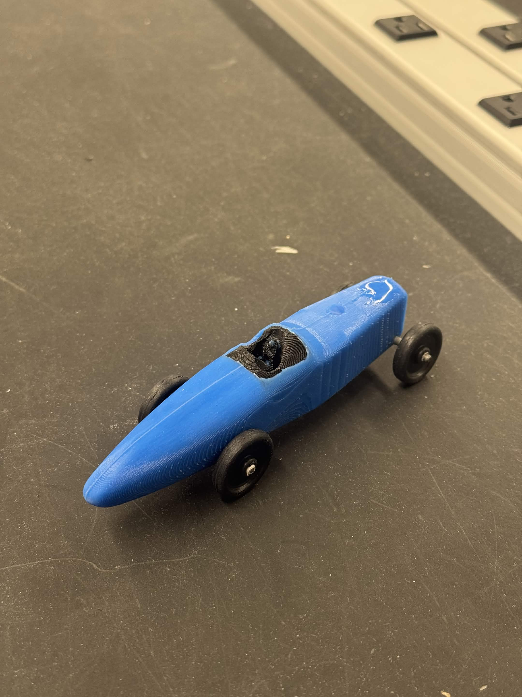
Project Overview: Materials and Manufacturing project focused on taking a historic race car from CAD design through physical manufacturing and then developing a complete manufacturing process and engineering analysis. The project was divided into two parts: hands-on model car manufacturing and in-depth manufacturing process analysis.
Part 1: Model Car Design & Manufacturing
The first part of the project focused on designing and fabricating a scale model of the Duesenberg 1921 Grand Prix. The project applied CAD, additive manufacturing, molding, casting, machining, and injection molding to create the major components of the final model.
Project Objectives
- Research and develop a CAD model of the Duesenberg 1921 Grand Prix.
- Design the car body, cockpit, wheels, axles, and supporting components.
- Develop a mold for manufacturing the car body.
- 3D print the body mold and other required components.
- Design and manufacture a mold for producing the wheels.
- Apply casting, machining, injection molding, and additive manufacturing processes.
- Assemble the manufactured components into a finished scale model.
Final Model

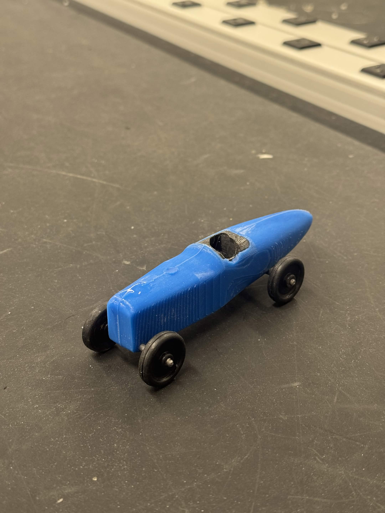
CAD Design
The car was developed as a multi-component CAD assembly, with separate geometry for the body, cockpit, wheels, and axles. The design process used the geometry of the original vehicle as a reference while adapting the components for manufacturing at a smaller scale.
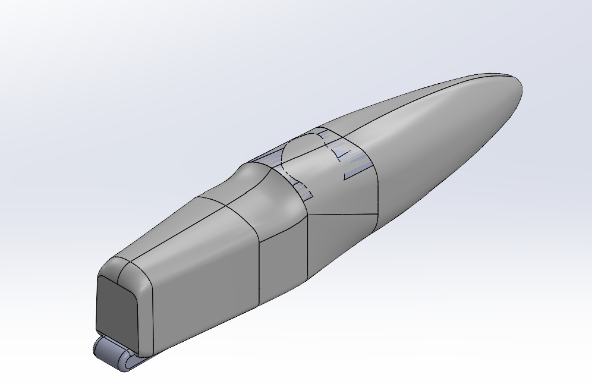
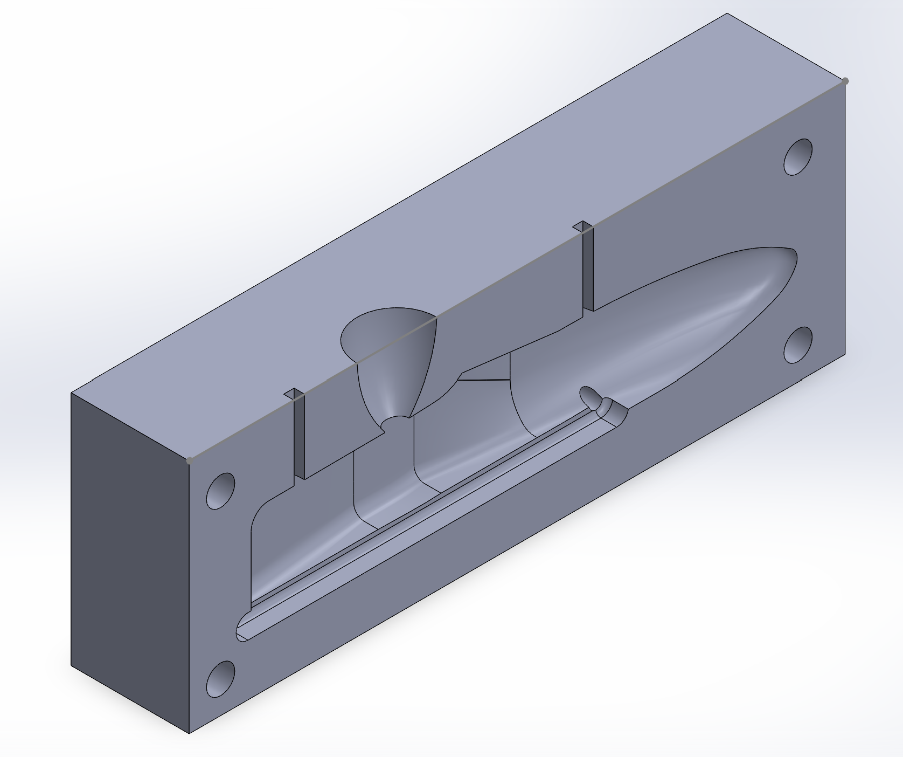
Car Body Mold
The car body mold was designed around the CAD geometry of the vehicle. The mold incorporated the necessary features for casting, including the separation between mold halves and provisions for material flow and air removal. The mold was then 3D printed and used to produce the car body.
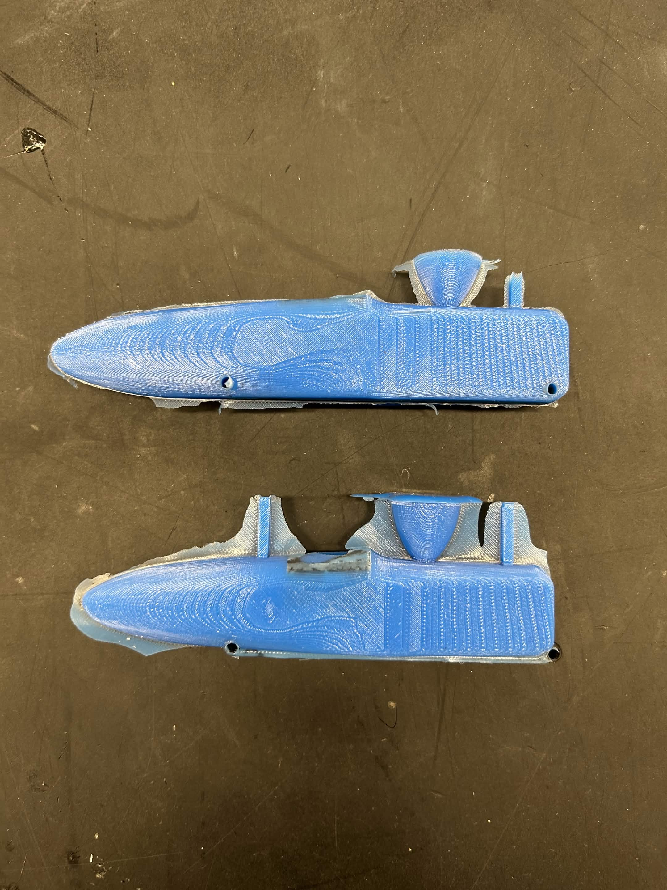
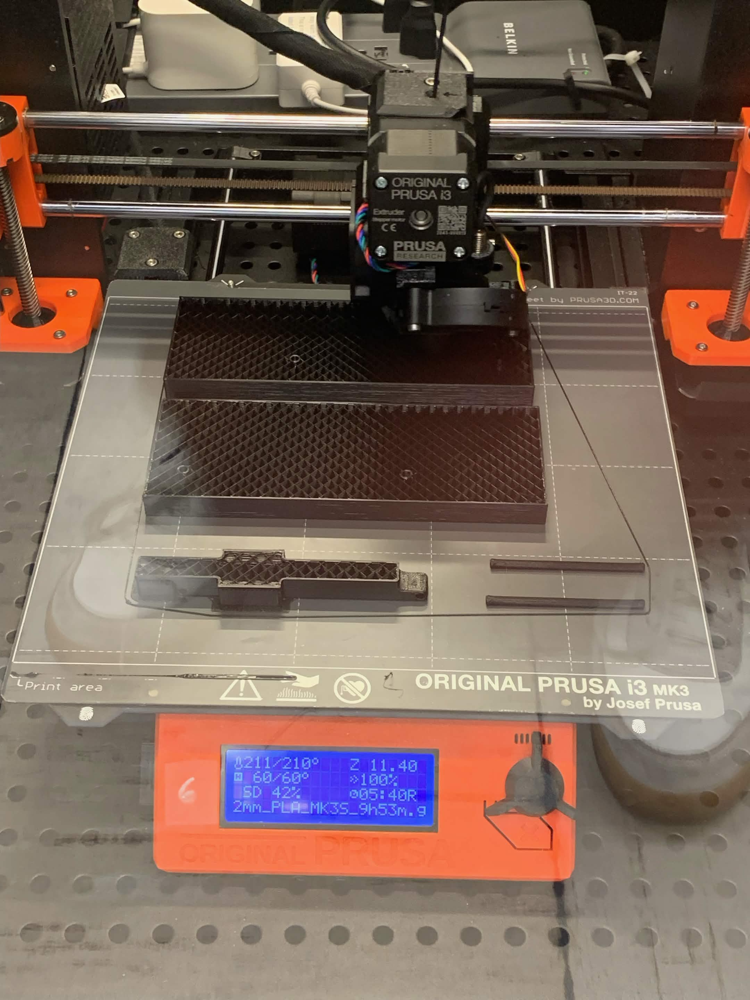
Design & Fabrication Process
- CAD Design: Developed the Duesenberg 1921 Grand Prix model in CAD, including the body, cockpit, wheels, axles, and internal components.
- Body Mold Design: Created the CAD geometry for the car body mold around the finished vehicle geometry.
- 3D Printing: Manufactured the car body mold and other required components using FDM 3D printing.
- Silicone Casting: Used the printed mold to cast the car body in silicone.
- Wheel Mold Design: Designed the wheel mold using the wheel CAD geometry and incorporated the features required for injection molding.
- CAM & Machining: Developed CAM toolpaths and machined the wheel mold from aluminum stock.
- Injection Molding: Used the machined wheel mold to manufacture the model wheels through injection molding.
- Assembly: Integrated the body, cockpit, wheels, axles, and internal components into the completed scale model.
Wheel Mold Design & Manufacturing
The wheel manufacturing process required designing a dedicated mold and translating the CAD geometry into a manufacturable aluminum mold. The mold was programmed using CAM and machined before being used for injection molding.
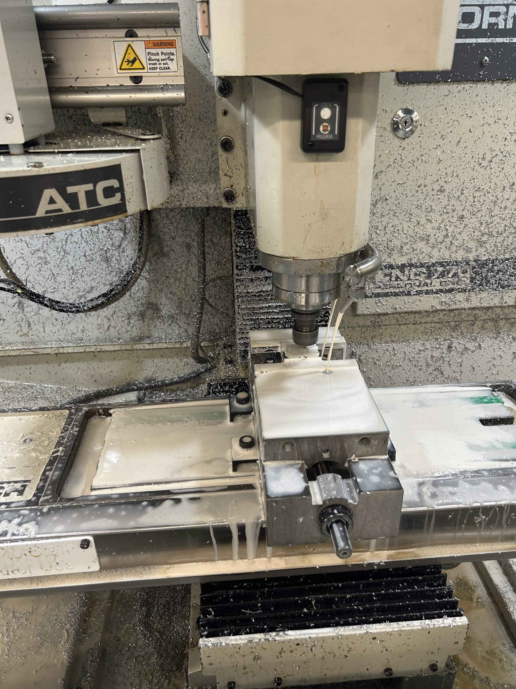
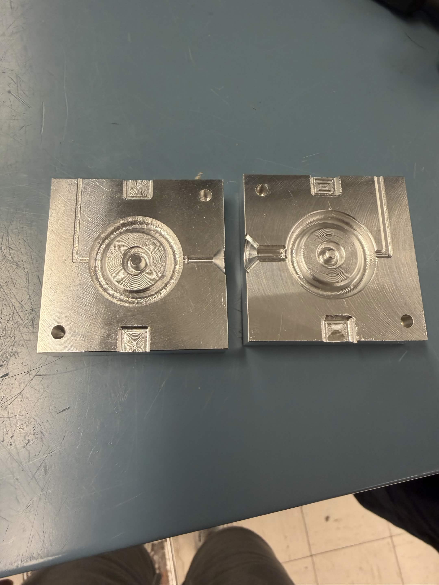
Materials & Manufacturing Processes
| Component | Material | Manufacturing Process |
|---|---|---|
| Car Body | Silicone | Silicone Casting |
| Cockpit | PLA | FDM 3D Printing |
| Wheels | Plastic | Injection Molding |
| Axles | Metal | Cutting, Deburring & Assembly |
| Body Mold | PLA | FDM 3D Printing |
| Wheel Mold | Aluminum | CAM & CNC Machining |
Manufacturing Skills Developed
- CAD modeling and assembly design
- Design for manufacturing
- FDM 3D printing and rapid prototyping
- Silicone mold and casting preparation
- CAM toolpath development
- Aluminum CNC machining
- Injection molding
- Manufacturing process planning
- Part finishing and assembly
- Design iteration based on manufacturing constraints
Part 2: Engineering Design & Manufacturing Analysis
The second half of the project focused on developing the engineering and manufacturing systems required to produce the car. Manufacturing processes and materials were evaluated based on the project requirements, followed by CAD-based analysis and engineering calculations to design and verify the casting and injection molding systems.
The overall workflow was process selection → material selection → tooling design → engineering analysis → design verification → manufacturing.
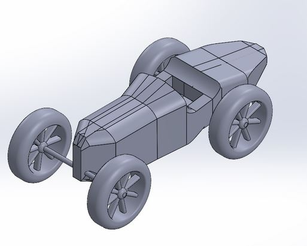
1. Manufacturing Process Selection
The first engineering decision was selecting the appropriate manufacturing process for the car body. Because the required production quantity was only one model, the process needed to minimize tooling cost while still accommodating the complex geometry of the car.
I evaluated sand casting, high-pressure die casting, and investment casting using a decision matrix based on tooling cost, production volume, part complexity, lead time, and surface finish.
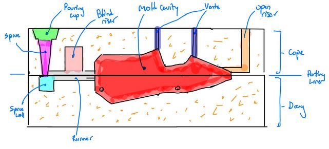
2. Pattern & Mold Material Selection
After selecting sand casting, I determined the materials required to create the casting tooling. The pattern was designed to be FDM 3D printed PLA, while the mold was constructed from silica sand with binder.
PLA Pattern
- Low-cost and rapidly manufactured through FDM printing
- Allows rapid design iteration
- Appropriate for a one-time prototype
- Used to create the sand cavity rather than as the final component
Silica Sand Mold
- Low material and tooling cost
- Suitable for low-volume production
- Thermally stable for molten aluminum
- Chemically compatible with aluminum casting
- Sand grain characteristics can influence strength and surface finish
3. Aluminum Alloy Selection
I evaluated 1060 aluminum, A356 aluminum, and Zamak 3 based on their castability, fluidity, cost, suitability for sand casting, and weight. A decision matrix was used to compare the materials across these criteria.
Selected Material: A356 Aluminum
A356 received the highest overall evaluation because of its castability, fluidity, and suitability for sand casting. Its strength-to-weight characteristics also make it appropriate for an automotive-style cast component.
4. Sand Casting Mold Design
With the process and alloy selected, I designed the complete sand casting system around the CAD geometry. The mold incorporated a cope, drag, parting line, sprue, runner, gates, riser, and vents.
Parting Line Design
The parting line was positioned at the interface between the cope and drag along the primary symmetry plane of the car. The location was selected near the widest cross-section of the geometry to minimize undercuts and allow the pattern to be removed with a relatively straight pull.
This reduces mold mismatch and simplifies pattern removal while improving dimensional accuracy and reducing the amount of trimming and sanding required after casting.
Gates, Sprue, Risers & Vents
- Sprue: Introduces molten aluminum through gravity-driven flow.
- Runner: Transfers molten aluminum from the sprue toward the gates.
- Gates: Feed molten aluminum into the casting while supporting bottom-up filling.
- Riser: Provides additional molten metal during solidification and compensates for casting shrinkage.
- Vents: Allow trapped air to escape from high points and small geometric extremities.
- Sprue Well: Helps reduce the likelihood of sand particles entering the mold cavity.
The gating and vent locations were selected to promote continuous filling, minimize air entrapment and turbulence, and reduce the likelihood of porosity and misruns.
5. Casting & Gating Analysis
I used the car's CAD geometry to develop and size the sand casting system, including the riser, sprue, runner, and gates. The model had a volume of 5.76 in3 and a surface area of 33.54 in2, which were used to determine the casting modulus and riser dimensions.
The resulting cylindrical riser was sized to 1.12 in diameter × 1.12 in height. I also sized the gating system for a target 2-second fill time and analyzed the resulting metal flow.
6. Gating Design Verification
I verified the initial gate design against the allowable metal velocity. The initial design exceeded the 1 m/s velocity limit, so I iterated on the gate dimensions and increased the gate area from 0.068 in2 to 0.073 in2.
I also analyzed the runner dimensions and calculated a Reynolds number of 1.26 × 104 to evaluate the resulting flow regime.
7. Wheel Mold Design
I designed a single-cavity, two-plate aluminum injection mold for the car's wheels. The mold incorporated a center-plane parting line, an edge gate near the wheel hub, cooling channels, and draft for reliable part removal.
The tooling was designed with design for manufacturing considerations to balance part quality, machining requirements, and ease of demolding.
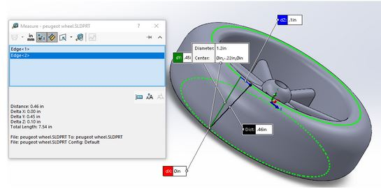
8. Injection Molding Analysis
I analyzed the injection molding process for the wheel using ABS, evaluating material shrinkage, shot size, required clamping force, cooling time, and overall cycle time.
0.6%
Material Shrinkage
0.46 in3
Shot Volume
2.706 tons
Minimum Clamping Capacity
40 s
Cycle Time
9. Engineering Design & Verification
The engineering analysis connected the initial car geometry to a complete manufacturing system. I used process and material selection methods, CAD analysis, manufacturing calculations, and iterative design verification to develop the casting and injection molding processes.
- Manufacturing process and material selection
- Sand casting mold and gating design
- Riser and gate sizing
- Fluid-flow analysis
- Injection mold CAD and DFM
- Clamping-force analysis
- Cooling and cycle-time calculations
- Iterative design verification
Part 2 Overview
Part 2 transformed the completed CAD model into a manufacturable system through engineering analysis and process development. The work connected manufacturing and material selection with tooling design, casting and injection molding calculations, fluid-flow analysis, DFM considerations, and iterative design verification. This provided a complete engineering workflow from initial CAD geometry to a validated manufacturing approach.
Final Manufacturing System
The final manufacturing concept combined a 3D-printed pattern and silica-sand mold for the aluminum car body with a dedicated aluminum injection mold for the polymer wheels. The tooling, gating, riser, mold geometry, and process parameters were developed through engineering analysis and manufacturing constraints.
Together, the two parts of the project connected CAD design, hands-on manufacturing, tooling development, material selection, process planning, and quantitative engineering analysis into a complete manufacturing workflow.
← Return to Home